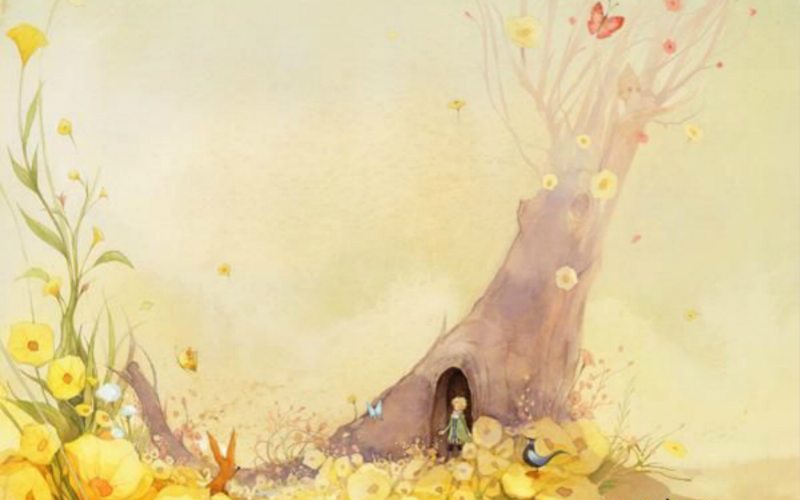

-
- 什么叫‘驯服’呢？
- 这是已经早就被人遗忘了的事情，它的意思就是‘建立联系’。
- 建立联系？
-一点不错，对我来说，你还只是一个小男孩，就像其他千万 个小男孩一样。我不需要你。你也同样用不着我。对你来说，我也不过是一只狐 狸，和其他千万只狐狸一样。但是，如果你驯服了我，我们就互相不可缺少了。 对我来说，你就是世界上唯一的了；我对你来说，也是
世界上唯一的了。
- 我有点明白了。有一朵花……，我想，她把我驯服了……
- 这是可能的。世界上什么样的事都可能看到……
- 
- 如果你要是驯服了我，我的生活就一定会是欢快的。你的脚步声就会象音乐一样让我从洞里走出来。你有着金黄色的头发。那么，一旦你驯服了我，这就会十分美妙。麦子，是金黄色的，它就会使我想起你。而且，我甚至会 喜欢那风吹麦浪的声音……
请你驯服我吧！
- 我是很愿意的。可我的时间不多了。我还要去寻找朋友，还有许多事物要了解。
- 只有被驯服了的事物，才会被了解。如果你想要一个朋友，那就驯服我吧！
- 那么应当做些什么呢？
- 应当非常耐心。开始你就这样坐在草丛中，坐得离我稍微远些。我用眼角瞅着你，你什么也不要说。每天， 你坐得靠我更近些……你下午四点钟来，那么从三点钟起，我就开始感到幸福。到了四点 钟的时候，我就会坐立不安；我就会发现幸福的代价。应当有一定的仪式。
- 仪式是什么？
- 这也是一种早已被人忘却了的事。它就是使某一天与其他日 子不同，使某一时刻与其他时刻不同。